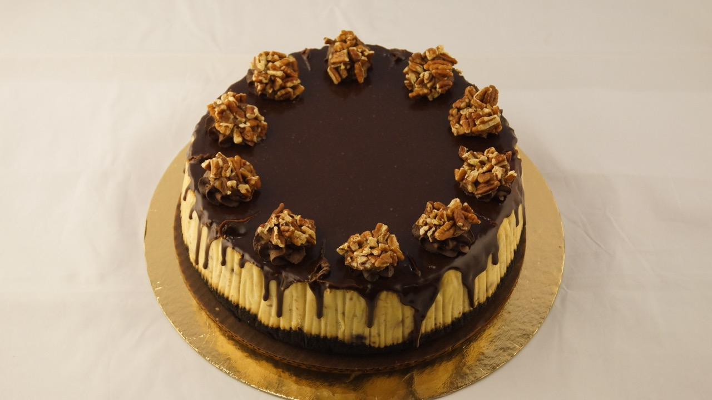
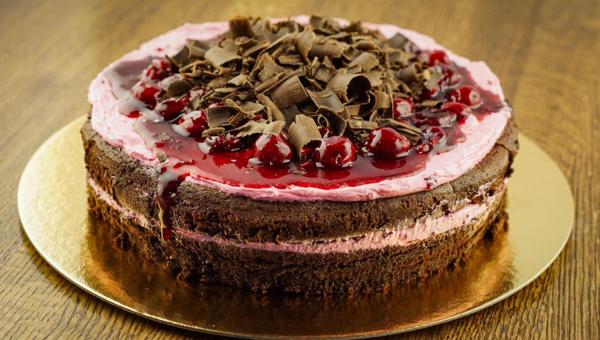
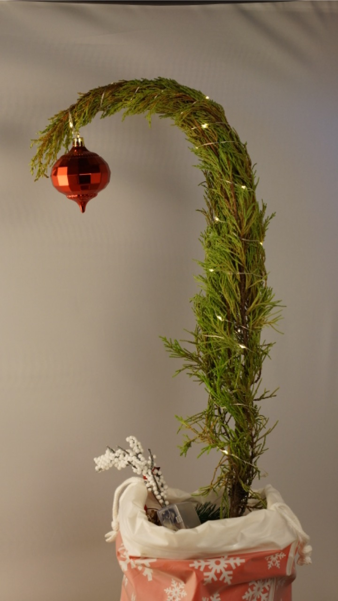
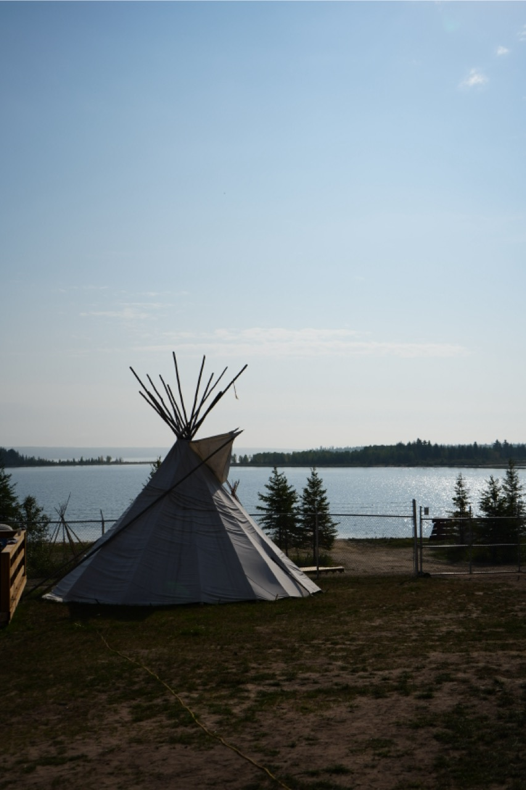
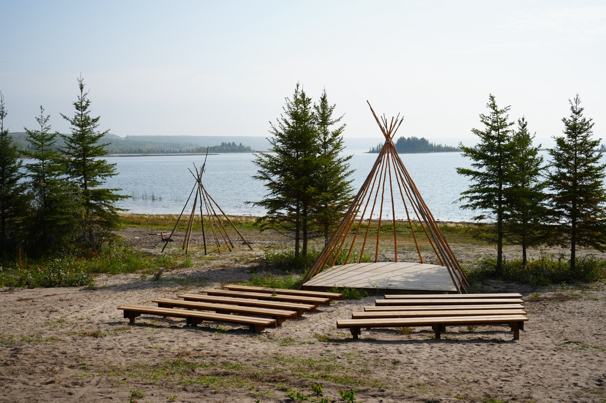
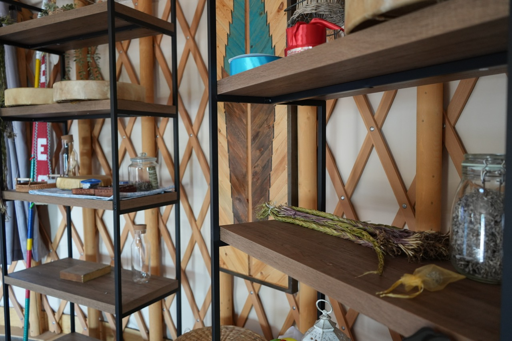
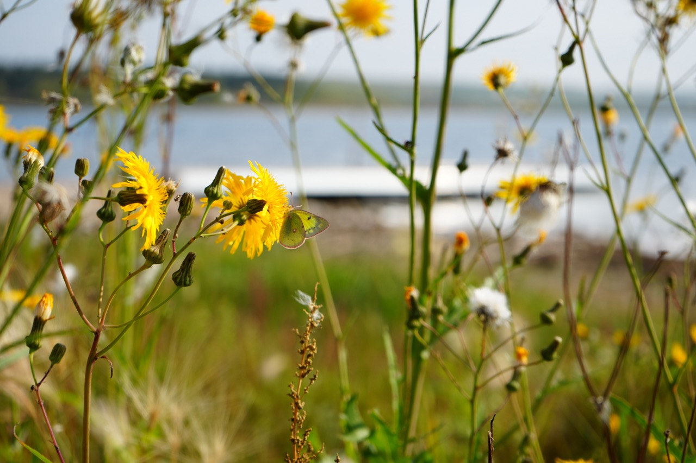
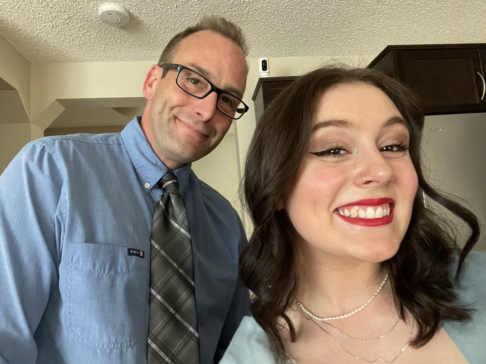

Creative Visual Stories & Authentic Narratives
Featuring commercial photography and cultural storytelling by Cailey Klein.

High-resolution product showcase highlighting textures.

Textured shot designed for high-end retail marketing.

Stylized commercial set design and holiday photography.

Cultural landscape photography.

Outdoor meeting grounds featuring traditional structures.

Interior photography showcasing traditional medicines and items.

Nature photography capturing the local ecosystem.

Shane Klein | Director & Producer
With an extensive background in media production, Shane focuses on client-driven storytelling. He specializes in creating digital narratives, educational content, and impactful visual media that connect with audiences.
Cailey Klein | Videographer & Photo Editor
Cailey brings a refined focus to commercial food, product, and storytelling visuals. Her expertise was recently commissioned by The Cheesecake Factory, showcasing her ability to deliver world-class retail assets. She also captures striking environmental and cultural photography, adding depth to our visual narratives.